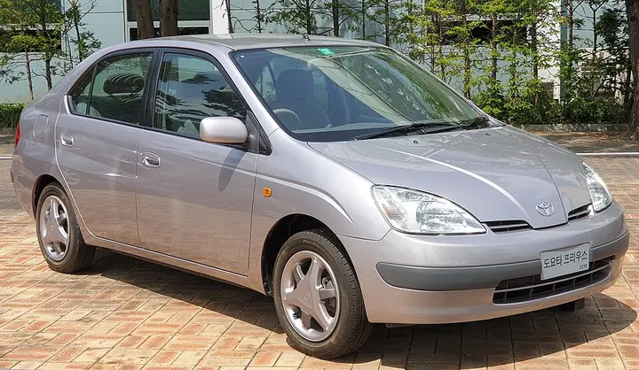
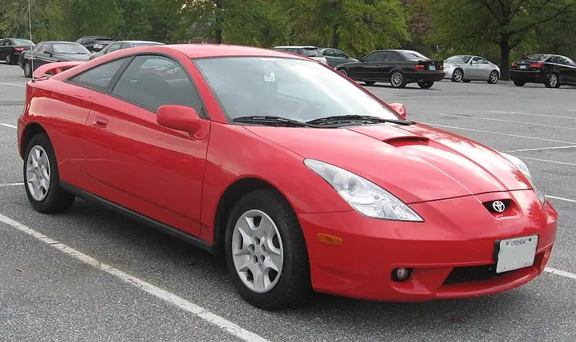
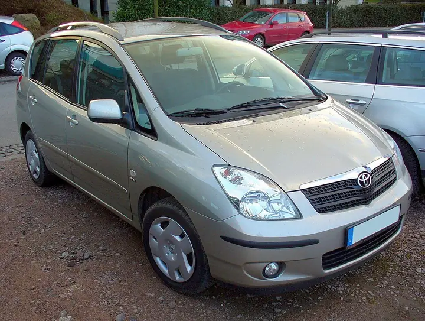
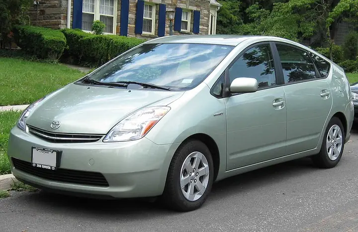

Platform
Toyota MC
15 generations of 12 models by Toyota, 1997–2017.
The cars

Toyota Prius · First generation (XW10; 1997)
Toyota Celica · Seventh generation (T230; 1999)- Toyota Corolla · Ninth generation (E120, E130; 2000)
 Toyota Opa
Toyota Opa Toyota RAV4 · Second generation (XA20; 2000)
Toyota RAV4 · Second generation (XA20; 2000)- Toyota Corolla Spacio · Second generation (E120; 2001)

Toyota Corolla Verso · First generation (E120; 2001)- Toyota Ipsum · Second generation (XM20; 2001)
- Toyota Noah · First generation (R60; 2001)
 Toyota Caldina · Third generation (T240; 2002)
Toyota Caldina · Third generation (T240; 2002)- Toyota Avensis · Second generation (T250; 2003)

Toyota Prius · Second generation (XW20; 2003) Toyota Corolla Verso · Second generation (AR10; 2004)
Toyota Corolla Verso · Second generation (AR10; 2004) Toyota Isis
Toyota Isis- Toyota Noah · Second generation (R70; 2007)